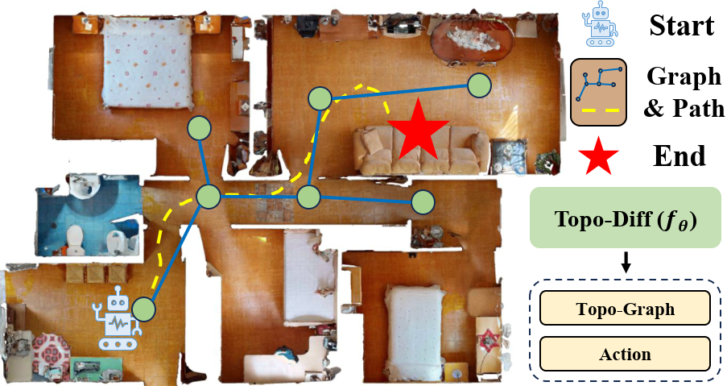
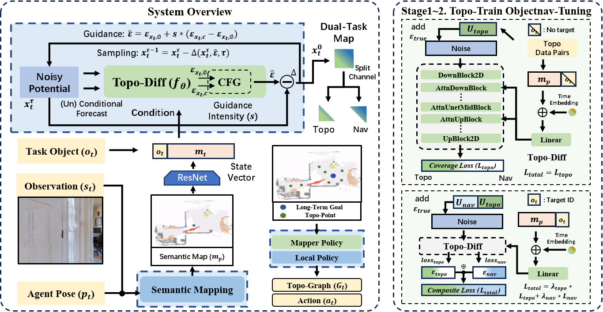
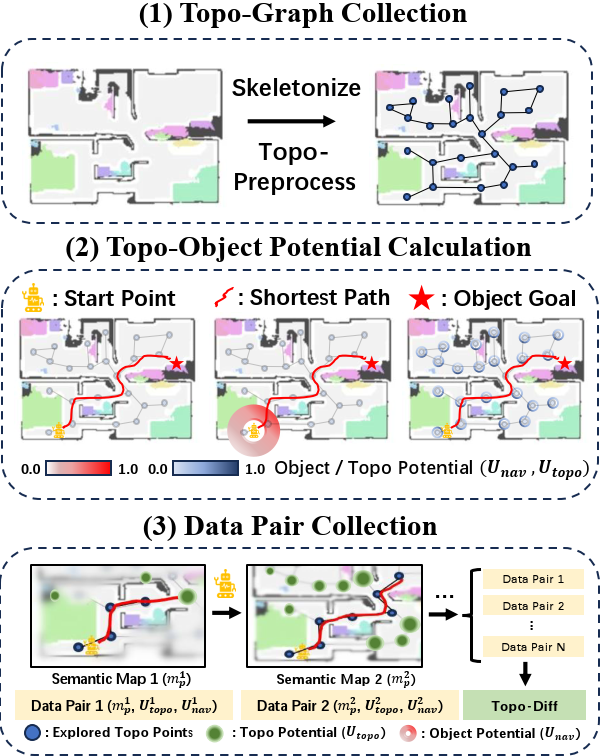
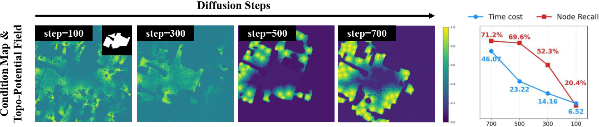
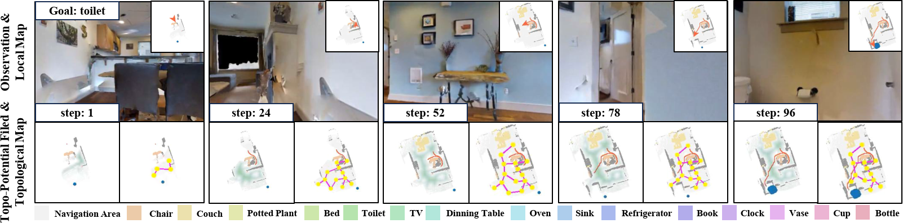

Object-Goal Navigation (ObjectNav) requires an embodied agent to search for and reach a target object category in previously unseen environments using only onboard egocen- tric observations, which is a fundamental capability for long- horizon autonomous robots. Current Object-Goal Navigation methods typically discard environmental knowledge after each episode, limiting their ability to operate autonomously over long horizons. To overcome this limitation, we introduce DIPP, a diffusion-based potential planner that unifies navigation and mapping. DIPP generates two complementary potential fields: a navigation potential that directs the agent toward the target and a topological potential that captures the environment’s structural skeleton. The topological potential serves a dual purpose: it acts as an implicit structural prior for waypoint selection when fused directly with the navigation potential and, more importantly, enables the incremental construction of a persistent, explicit topological graph. This graph enables a hierarchical policy to select strategic, long-horizon waypoints, elevating planning from a tactical search to a strategic decision. We evaluate DIPP in the Habitat simulator on the Gibson dataset. Results show that DIPP achieves strong performance on standard ObjectNav metrics (SR, SPL) while constructing structurally accurate maps, evidenced by a high Node Recall score. Furthermore, leveraging the explicit persistent graph for hierarchical planning significantly boosts navigation perfor- mance. These findings demonstrate the effectiveness of DIPP in enabling embodied agents to build and exploit persistent spatial knowledge for long-term operation in unseen environments.





@inproceedings{yiqing2026dipp,
author = {Yiqing Z, Tao W, Miaoxin P, et al.},
title = {DIPP: A Diffusion-based Potential Planner for Synergistic Navigation and Mapping},
booktitle = {2026 IEEE International Conference on Robotics and Automation (ICRA)},
year = {2026},
publisher = {IEEE},
}